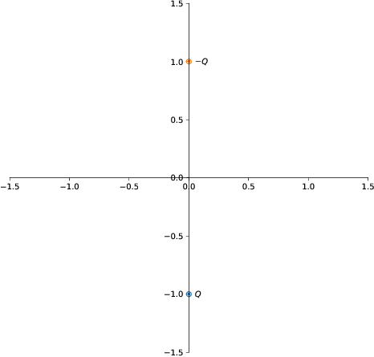
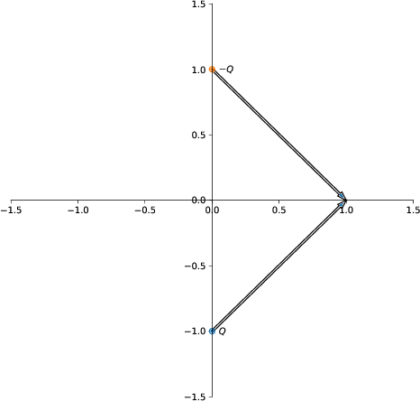
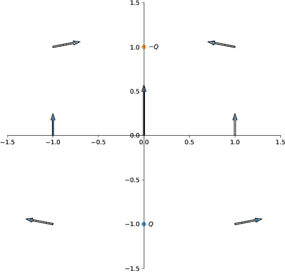

En ladning \( +Q \) er plassert i punktet \( (0,-a) \) og en ladning \( -Q \) er plassert i punktet \( (0,a) \).
a) Lag en tegning av systemet.

b) Tegn inn \( \vec{R} \)-vektorene du vil bruke for å finne det elektriske feltet i punktet \( (a,0) \).

c) Tegn inn størrelse og retning på det elektriske feltet i de 9 punktene du får ved å la \( x = -a,0,a \) og \( y=-a,0,a \).

(Merk at feltet ikke er definert i punktene \( (0,\pm a) \)).